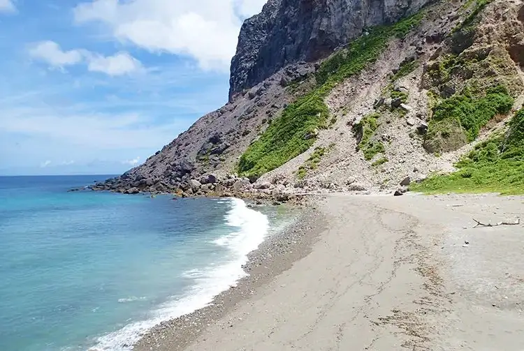

Kozushima, Tokyo: things to do, food and stays
Kozushima · Tokyo
Kozushima
Highlighted on the Tokyo map.

Sights
Dining
Yocchare Center
よっちゃーれセンター

Seafood restaurant in Kozushima, Tokyo.
Kozushima Ryugu
神津島 龍宮

Seafood restaurant in Kozushima, Tokyo.
Cafe'& Diner 'AILANA
カフェ＆ダイナー アイラナ

Meat restaurant in Kozushima, Tokyo.
Restaurant Sabisaki
れすとらん錆崎

Japanese restaurant in Kozushima, Tokyo.
Izakaya Chouchin Tatsumi
居酒屋 ちょうちん たつみ

Seafood restaurant in Kozushima, Tokyo.
Yamashita Ryokan Bekkan
山下旅館 別館

Seafood restaurant in Kozushima, Tokyo.
Fujiya Bakery
藤屋ベーカリー

Sweets and bakery shop in Kozushima, Tokyo.
Hotel Kouzukan
ホテル神津館

Restaurant in Kozushima, Tokyo.
Super Maruhan
スーパーまるはん

Restaurant in Kozushima, Tokyo.
Kankuro
勘九郎

Restaurant in Kozushima, Tokyo.
Yoshiei Maru
吉栄丸

Restaurant in Kozushima, Tokyo.
Shin Ei Rou
新栄楼

Chinese or Asian restaurant in Kozushima, Tokyo.
Jukusei Gyo Sushi BAR
熟成魚寿司BAR

Seafood restaurant in Kozushima, Tokyo.
Yamacho
山長

Izakaya or bar in Kozushima, Tokyo.
Fumoto Ya
ふもと屋

Restaurant in Kozushima, Tokyo.
Ryoshi no Yado Joeimaru
漁師の宿 丈栄丸

Restaurant in Kozushima, Tokyo.
Minshuku Matsuyoshi
民宿 まつよし

Restaurant in Kozushima, Tokyo.
Yamashita Ryokan Honkan
山下旅館 本館

Seafood restaurant in Kozushima, Tokyo.
Nakamura Ya
中村屋

Seafood restaurant in Kozushima, Tokyo.
Tears Blue Open Cafe
ティアーズブルーオープンカフェ

Cafe in Kozushima, Tokyo.
Habu
波浮

Noodle restaurant in Kozushima, Tokyo.
Sawayaka Cordon Bleu
さわや コルドンブルー

European restaurant in Kozushima, Tokyo.
Cafe Nora
カフェ のら

Cafe in Kozushima, Tokyo.
Kuroshio Shokai
黒潮商会

Restaurant in Kozushima, Tokyo.
Ueno Airana
上のあいらな

Meat restaurant in Kozushima, Tokyo.
Marushima Miyage Ten
丸島土産店

Restaurant in Kozushima, Tokyo.
Hamakawa Seiniku Ten
浜川精肉店

Restaurant in Kozushima, Tokyo.
Nakatoyo Shoten
中豊商店

Sweets and bakery shop in Kozushima, Tokyo.
Ryokan Shusou
旅館秀蒼

Restaurant in Kozushima, Tokyo.
Miyako Zushi Honten
美家古寿司 本店

Seafood restaurant in Kozushima, Tokyo.
Cafe&Bar FamiliA
カフェ＆バー ファミリア

Cafe in Kozushima, Tokyo.
Shiomi Sushi
潮見寿司

Seafood restaurant in Kozushima, Tokyo.
Room SAKU

Cafe in Kozushima, Tokyo.
CAFE OWL

Cafe in Kozushima, Tokyo.
Matsumura Shoten
松村商店

Restaurant in Kozushima, Tokyo.
Sekisho Shoten
関庄商店

Restaurant in Kozushima, Tokyo.